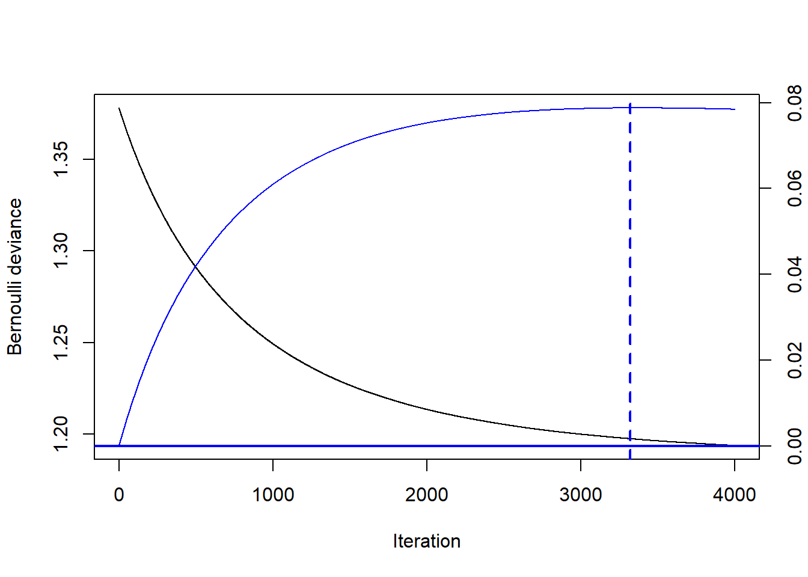
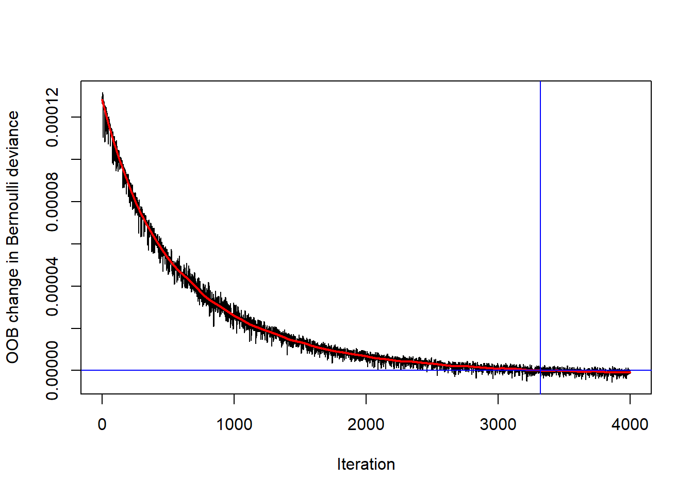
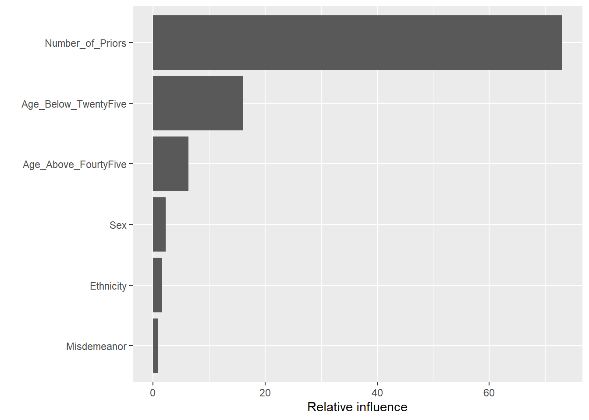
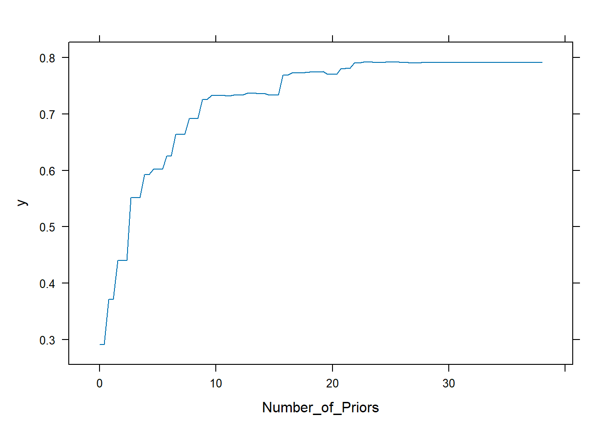
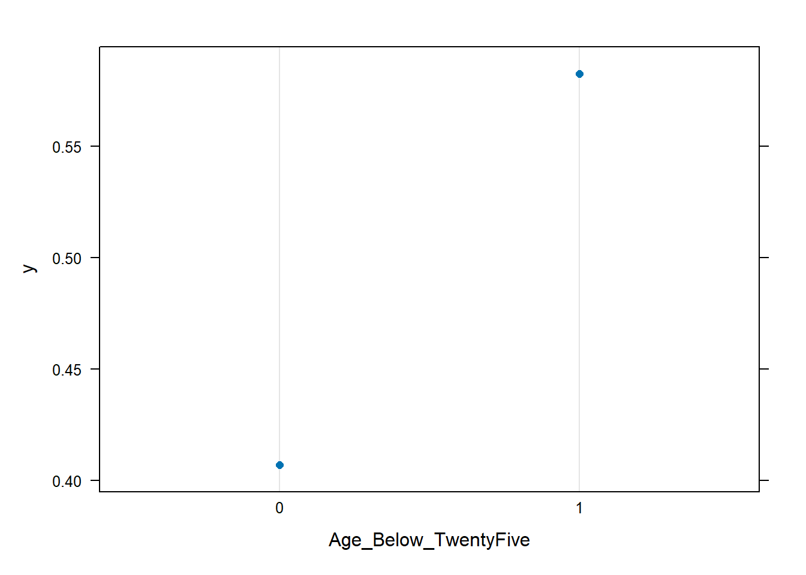
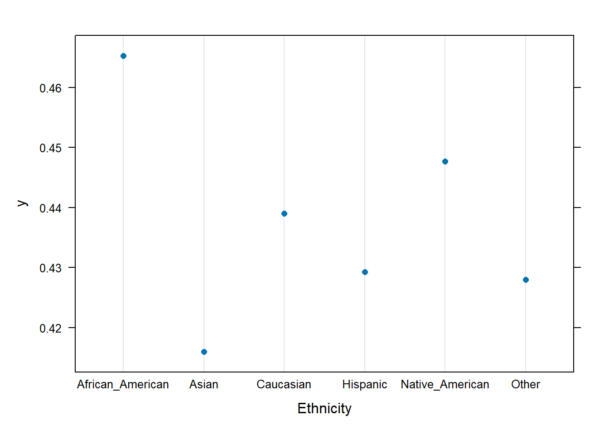
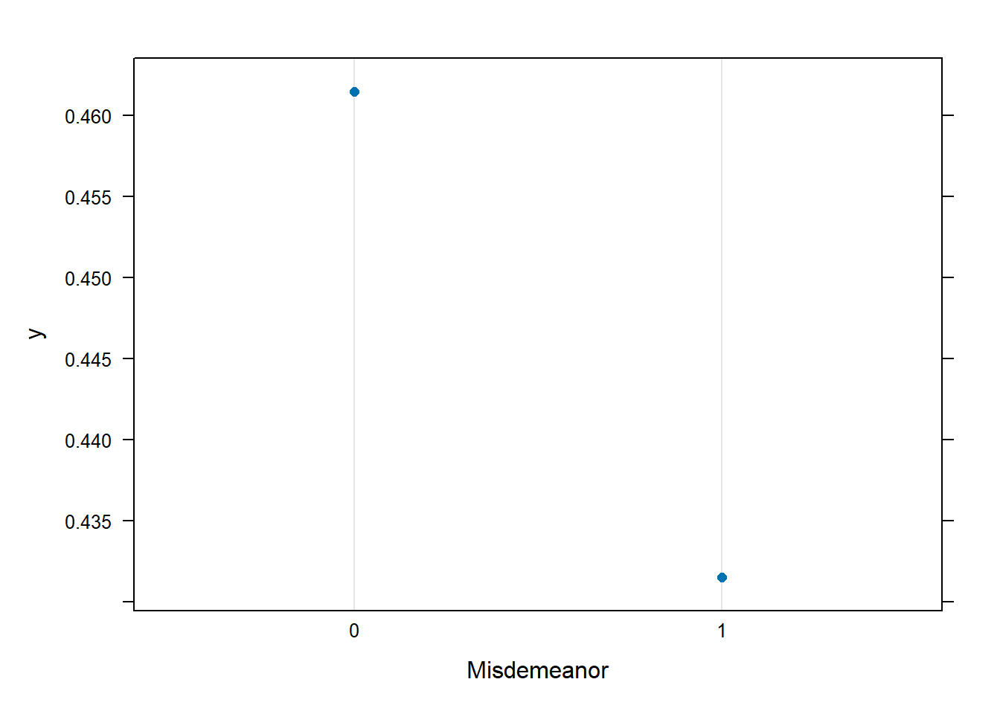

library(tidyverse) # datahåndtering, grafikk og glimpse()
library(rsample) # for å dele data i training og testing
library(gbm) # Funksjoner for boosting
library(caret) # For funksjonen confusionMatrix()
library(fairness) # For fairnessmetrics
library(gtsummary) # For å lage litt penere tabeller7 Boosting
I dette kapittelt skal vi bruke følgende pakker:
Det er flere typer boosting-algoritmer. Men vi skal fokusere på stochastic gradient boosting. Adaptive boosting er presentert i læreboka, men først og fremst som et illustrativt eksempel eller en pedagogisk introduksjon. Andre boosting-algoritmer er varianter av gradient boosting.
Det er også et poeng at softwaren for adaptive boosting er mer begrenset enn for gradient boosting. Vi bruker ‘gbm’ pakken som gir grunnleggende funksjonalitet.
Det sentrale punktet for boosting er at modellen bygges steg for steg med en gradvis forbedring fra forrige runde slik at modellen blir gradvis bedre og bedre. Dette til kontrast til bagging der styrken ligger i avstemning på tvers av mange klassifikasjonstrær. I boosting er det altså samme modell som forbedres i hvert steg. Dette gjøres på en måte der feilklassifiseringen vektes opp i hver iterasjon. I adaptive boosting lages den en vekt litt mekanisk, mens i gradient boosting baseres det på en gradient fra velkjente statistiske fordelinger, f.eks. binomisk fordeling for kategorisk utfall.
Vi bruker compas-dataene igjen. Men nå må vi omkode utfallsvariabelen til en numerisk variabel fordi funksjonen gbm() krever numerisk utfallsvariabel. Vi bruker na.omit() for å fjerne eventuelle rader med manglende verdier.
compas <- readRDS("data/compas.rds") %>%
mutate(Two_yr_Recidivism = ifelse(Two_yr_Recidivism == "1", 1, 0)) %>%
na.omit()
glimpse(compas)Rows: 6,172
Columns: 7
$ Two_yr_Recidivism <dbl> 0, 1, 1, 0, 1, 0, 0, 0, 1, 0, 0, 1, 1, 0, 0, 1, 1…
$ Number_of_Priors <int> 0, 0, 4, 0, 14, 3, 0, 0, 3, 0, 0, 1, 7, 0, 3, 6, …
$ Age_Above_FourtyFive <fct> 1, 0, 0, 0, 0, 0, 0, 0, 0, 0, 0, 1, 0, 0, 0, 0, 0…
$ Age_Below_TwentyFive <fct> 0, 0, 1, 0, 0, 0, 0, 0, 1, 0, 0, 0, 0, 0, 0, 0, 0…
$ Misdemeanor <fct> 0, 0, 0, 1, 0, 0, 1, 0, 1, 1, 0, 0, 0, 1, 0, 0, 0…
$ Ethnicity <fct> Other, African_American, African_American, Other,…
$ Sex <fct> Male, Male, Male, Male, Male, Male, Female, Male,…Vi lager en split som tidligere
set.seed(42)
training_init <- initial_split(compas)
training <- training(training_init)
testing <- testing(training_init)7.1 Stochastic gradient boosting
Gradient boosting for klassifisering bruker ikke vekter på samme måte som adaboost, men bruker residualene. For et binomisk utfall (to kategorier kodet 0 eller 1) er residualen, \(r_i\), er definert som
\[ r_i = y_i - \frac{1}{e^{-f(x_i)}} \] Litt forenklet kan vi si at dette er det observert utfallet minus det predikerte utfallet fra logistisk regresjon. “Gradienten” er da \(f(x)\).
Gradient boosting fungerer med flere andre fordelinger, men hvis vi begrenser oss til klassifikasjon kan vi angi distribution = "bernoulli". Merk at for gbm må utfallsvariabelen være numerisk, ikke factor.
set.seed(542)
gradboost1 <- gbm(formula = Two_yr_Recidivism ~ .,
data = training,
distribution = "bernoulli",
n.trees = 4000,
interaction.depth = 3,
n.minobsinnode = 1,
shrinkage = 0.001,
bag.fraction = 0.5)Merk angir argumentet bag.fraction = 0.5 i modellen (som forøvrig også er forvalget, så man behøver ikke skrive det, egentlig). I hver split brukes altså halve utvalget til å bestemme neste split slik at andre halvdel er out-of-bag data. Hvis dette argumentet settes til 1 brukes hele datasettet i hver split.
Standard plot av gis ved gbm.perf() som nedenfor, og viser forbedring for hver iterasjon. Ytterligere forbedring stopper opp ved nærmere 2500 iterasjoner, markert ved den vertikale blå linjen.
gbm.perf(gradboost1, oobag.curve = TRUE, method = "OOB",
plot.it=T, overlay = T) 

[1] 3322
attr(,"smoother")
Call:
loess(formula = object$oobag.improve ~ x, enp.target = min(max(4,
length(x)/10), 50))
Number of Observations: 4000
Equivalent Number of Parameters: 39.99
Residual Standard Error: 2.048e-06 Denne estimeringen kan justeres ved å endre tuningparametrene.
n.treeser antall iterasjoner, dvs. antall klassifikasjonstrær. Forvalget er 100, som er åpenbart altfor lavt, så sett noen tusen.interaction.depther antall split i hvert tre. Forvalget er 1, men Berk sier at 1-3 er ok.n.minobsinnodeer minste antall observasjoner i siste node. Forvalg er 1, men Berk anslår at 5-15 fungerer bra. (Hvis modellen har bare en split er det ikke sikkert dette er så viktig)shrinkageer hvor store skritt langs gradienten som testes i hver iterasjon, og dette skal være lavt. Forvalget er 0.001. Kostnaden er at det tar lengre tid enn ved et høyere tall (opp til 10 kan testes).bag.fractioner hvor stor andel av data som brukes i hver iterasjon. Dette hjelper for å redusere overfitting. Forvalget er 0.5, som innebærer at andre del av data kan fungere som OOB. Merk at Berk understreker at OOB bare kan brukes til å vurdere tilpassingen slik som i figuren over.
7.2 Tolkbarhet
Som i random forest kan vi undersøke hvilke variable som er mest betydningsfulle i prediksjonen. I utgangspunktet gir summary() mot et gbm-objekt et plot, men dette er stygt og kan være vanskelig å lese skikkelig. Derfor inneholder koden nedenfor argumentet plotit=FALSE, så lages det et bedre plot med ggplot() etterpå.1
Resultatene er tolkbare tilsvarende som relative importance som vi så i random forest.
sumboost <- summary(gradboost1, method = permutation.test.gbm, normalize = T,
plotit = F)
ggplot(sumboost, aes(x = reorder(var, rel.inf), y = rel.inf)) +
geom_col()+
ylab("Relative influence")+
xlab("")+
coord_flip()
Merk at resultatet fra summary() her returnerer en data.frame som kan plottes direkte med ggplot. Eneste mystiske som skjer er at x er angitt som sortert etter verdier på y-variabelen. Så er plottet snudd om med coord_flip til slutt.
Man kan også plotte hvordan resultatet endres med ulike verdier på prediktorene. Dette tilsvarer partial dependence. Her er det mest hensiktsmessig å bruke den innebygde funksjonen plot() som kaller en underliggende plot-funksjon for gbm-objekter.
plot(gradboost1, "Number_of_Priors", type = "response")
plot(gradboost1, "Age_Below_TwentyFive", type = "response")
plot(gradboost1, "Ethnicity", type = "response")
plot(gradboost1, "Misdemeanor", type = "response")
7.3 Prediksjon og confusion matrix
Vi gjør prediksjon på tilsvarende måte som før, men det er et par viktige detaljer. Forvalget for predict() for gbm-objekter er \(f(x)\) som her er på log odds skalaen, men hvis vi setter type = "response" så får vi ut en sannsynlighet (dvs. et tall mellom 0 og 1). Da kan vi klassifisere etter hvilken gruppe som er mest sannsynlig, dvs. hvis høyere enn 0.5
compas_p <- training %>%
mutate(pred = predict(gradboost1, type = "response"),
p_klass = ifelse(pred > 0.5, 1, 0))Lager enkel krysstabell med predikert mot observert (dvs confusion matrix)
tab <- table(compas_p$p_klass, training$Two_yr_Recidivism)
tab
0 1
0 1936 850
1 583 1260Lager bedre confusion matrix med alle øvrige utregninger. NB! Husk å presisere hva som er positiv verdi for at tallene skal blir riktig vei.
confusionMatrix(tab, positive="1")Confusion Matrix and Statistics
0 1
0 1936 850
1 583 1260
Accuracy : 0.6904
95% CI : (0.6769, 0.7037)
No Information Rate : 0.5442
P-Value [Acc > NIR] : < 2.2e-16
Kappa : 0.3695
Mcnemar's Test P-Value : 2.113e-12
Sensitivity : 0.5972
Specificity : 0.7686
Pos Pred Value : 0.6837
Neg Pred Value : 0.6949
Prevalence : 0.4558
Detection Rate : 0.2722
Detection Prevalence : 0.3981
Balanced Accuracy : 0.6829
'Positive' Class : 1
7.4 Asymetriske kostnader
Vi har det vanlige problemet med å vurdere om falske positive og falske negative er like problematisk. Igjen er det slik at den vurderingen krever en vurdering av utfallet man ønsker gjøre noe med og konsekvensene av tiltaket som skal iverksettes. For credit-dataene kan det jo være at noen ikke vurderes som kredittverdige.2
For å håndtere asymetriske kostnader kan vi vekte utfallene forskjellig og angi denne vekten i prosedyren. Argumentet weights = ... tar en vektor med verdier (ét tall for hver observasjon i dataene) og skal ikke være en del av datasettet.
Her er et eksempel der negative tillegges 2 ganger så mye vekt som positive i modellen. Når utfallene vektes ulikt i modellen vil det dermed slå ut på feilratene slik at det blir ulikt forhold for falske postive og falske negative (se mer i Berk kap. 6.4 og eksempel s. 277).
Vær obs på at det er ikke så lett å vite helt hvordan slik vekting slår ut på resultatene. Det er ikke et 1-til-1 forhold mellom vekting og feilrater. Som i annen justering kan dette gå ut over accuracy og andre mål, så det er vanligvis en trade-off her. Du må derfor sjekke resultatene og så evt. gå tilbake og justere vektene hvis det ikke ble slik du ønsket.
wts <- training %>%
mutate(wts = ifelse(Two_yr_Recidivism == 1, 1, 2)) %>% # se begrunnelse s. 274 i Berk
pull(wts)
set.seed(542)
gradboost2 <- gbm(formula = Two_yr_Recidivism ~ .,
data = training,
weights = wts,
distribution = "bernoulli",
n.trees = 4000,
interaction.depth = 3,
n.minobsinnode = 1,
shrinkage = 0.001,
bag.fraction = 0.5)Så kan vi gjøre prediksjon og confusion matrix på nytt.
compas_p <- training %>%
mutate(pred = predict(gradboost2, type = "response"),
p_klass = ifelse(pred > 0.5, 1, 0))Så kan vi legge tabellen inn i funksjonen confusionMatrix() for å få diverse utregninger. (Husk å presisere hva som er positiv verdi for at tallene skal blir riktig vei.) Dette er altså akkurat samme prosedyre som vi har brukt ved tidligere prediksjoner.
En endring her er at confusionMatrix() vil at variablene skal være factor-variable, mens boosting-algoritmen bruker numeriske variable selv om verdiene bare er 0 eller 1. Her er en løsning å legge til factor() som følger. Alternativt kan man gjøre om variablene til factor i steget ovenfor i det nye datasettet compas_p.
confusionMatrix(reference = factor(compas_p$Two_yr_Recidivism),
factor(compas_p$p_klass), positive="1")Confusion Matrix and Statistics
Reference
Prediction 0 1
0 2329 1447
1 190 663
Accuracy : 0.6464
95% CI : (0.6324, 0.6601)
No Information Rate : 0.5442
P-Value [Acc > NIR] : < 2.2e-16
Kappa : 0.2509
Mcnemar's Test P-Value : < 2.2e-16
Sensitivity : 0.3142
Specificity : 0.9246
Pos Pred Value : 0.7773
Neg Pred Value : 0.6168
Prevalence : 0.4558
Detection Rate : 0.1432
Detection Prevalence : 0.1843
Balanced Accuracy : 0.6194
'Positive' Class : 1
Estetikken er imidlertid underordet her. Sett gjerne
plotit = TRUEfor et mer quisk-and-dirty plot.↩︎Det er forresten også en implisitt vurdering her om hvem sitt problem dette er: banken behøver ikke synes det er problematisk å si nei til et boliglån, mens det fra samfunnets synsvinkel kan være uheldig at noen grupper sperres ute av boligmarkedet. Hvem som er “stakeholder” her er altså også et poeng, som vi lar ligge i denne sammenheng.↩︎